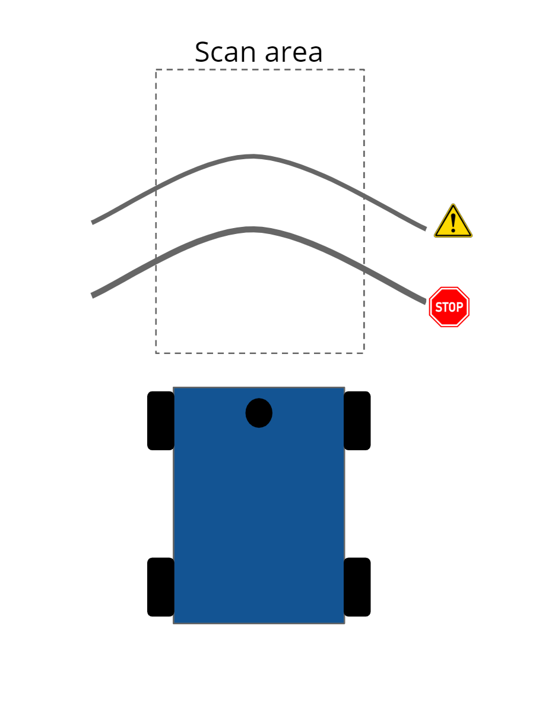
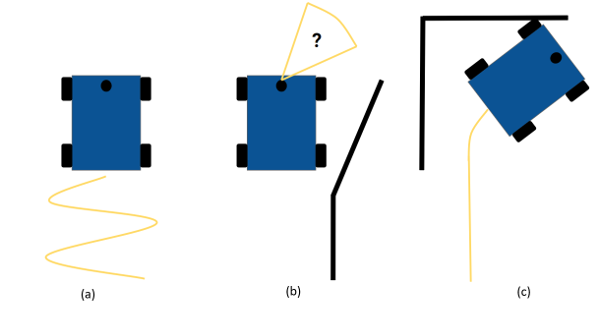
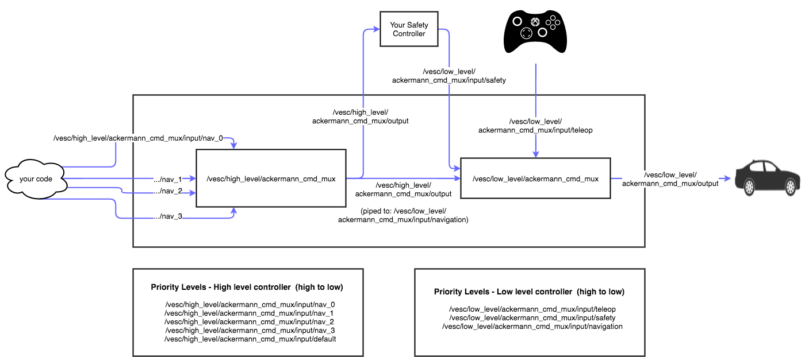

Slides for this lab are also accessible here.
Overview and Motivations
Olivia Siegel
When a seeing human walks the tunnels of Stata, they use their sense of sight to not bump into the walls. A visually impaired person might use their sense of touch, hearing, or even smell. The importance of being able to get our robot to recognize and follow a wall goes beyond the confines of this lab. This lab is important because it is the first step in making autonomous systems that can navigate like a human does. Being able to scan for objects and move accordingly is crucial for the field of robotics because there is no human brain to tell the system where to go.
Proposed Approach
Wall Follower
Olivia Siegel
The wall follower works by taking a laser scan of 270 degrees around the robot. Wall coordinates are in polar coordinates, which we converted to Cartesian coordinates relative to the coordinate frame of the car. We then chose a subset of these coordinates representing a forward-looking slice of 6-66 degrees, where 0 degrees is directly in front of the robot, to put into a linear regression to estimate where the wall is. Based on this estimate we could maintain the distance between our car and the wall using a PD controller. The proportional term of the controller made the robot oscillate to correct its position based on the error between the desired distance from the wall and the actual distance, and the derivative term served to damp these oscillations and make the wall following more smooth. The simulation for this process is shown in Figure 1 below.
Figure 1 - Visualization of Wall Detection in Simulation
This is a screen capture of the visualization tool rviz, showing the wall follower running in simulation while detecting nearby segments of the wall (see yellow line).
Safety Controller
Mohammed Nasir
The purpose of the safety controller is to stop the vehicle from colliding with obstacles at high speeds. At the same time, the controller must not be overly cautious as to stop the vehicle when a collision was not necessarily imminent. The objective of this task was to design a safety controller that would analyze the vehicle's current trajectory and bring it to a stop at the last possible moment. To accomplish this, we set two virtual barriers at the front of the vehicle: the "warn distance" to begin tracking the position of an obstacle, and the "stop distance" to stop as quickly as possible.
When an obstacle passes the warn distance, the distances to the object are recorded by the controller, until it reaches the stop distance where the vehicle would then slam on the brakes. The purpose of the warn distance is to eliminate noise in the obstacle detection scheme - there must be at least 10 readings between the warn and stop distances before the obstacle reading is considered to be valid. The distances are varied with the vehicle's velocity, calibrated to ensure that the stop distance is just over the braking distance of the vehicle at that speed. The warn distance was arbitrarily chosen to be 20% further than the stop distance.
In addition, the readings from the lidar have to be limited to only include the front of the vehicle. The polar coordinates returned by the lidar were converted to cartesian coordinates using simple trigonometry, and the detection region was limited to the width of the vehicle. A diagram of this scheme is shown in the following figure:
Figure 2 - Safety Controller Scan Region

This diagram shows the points that are accepted by the controller (the scan area), as well as the warn and stop distances.
Experimental Evaluation
Wall Follower
Jordan Gamble
Simulator Stage
The first step in creating our wall follower robot was to test our code in a simulation. We used the "wall_follower.py" python script from Lab 2 as the foundation for our wall follower code on our physical robot. The simulator code took in LaserScan data then sliced the data into a smaller section of about 60 degrees to represent the wall we wanted to follow. We then converted these points into Cartesian coordinates and filtered them through a simple linear regression model to obtain a line estimate of the wall. The linear regression model is an important step in our code as it allows us to smooth out the point cloud data we receive from the Lidar sensor and perform more robust distance and angle calculations with respect to our robot. To better visualize our estimate of the wall, we also created a marker object of our linear regression model for use in rviz.
Once we got an accurate model of our wall, we used the distance between our robot and the wall to create a feedback controller. For the purposes of the simulation, we found that a PD controller worked well to stabilize our robot's trajectory. The output of our PD controller was used to adjust the robot's steering angle until the error between the desired distance and the robot's actual distance was minimized. The final step for successfully running our controller in the simulator was to tweak the controller gains (in our case Kp and Kd) to achieve the fastest convergence with the least oscillations.
Physical Stage
For our first attempt to get the wall follower code working on our physical robot, we tried to simply use our simulator code without any changes to parameters or functions. Although our code ran properly in the simulation, we quickly found that physical parameters and constraints prevented our code from running correctly on our real robot. In particular, we encountered three main problems: (1) steady oscillations, (2) losing track of the wall, and (3) late turns at corners. Figure 3 illustrates these problems.
Figure 3 - Problems During Physical Stage

Figure 3 shows the three problems we encountered when we moved our simulator code to the physical robot. Picture (a) represents the oscillations caused by an unstable controller, (b) represents the robot losing sight of the wall at a convex corner, and (c) represents a collision occuring at a concave corner due to late turning.
Steady Oscillations
One of the biggest differences between the simulated and real robot was the level of oscillations. In the simulator, the gains were empirically chosen to reduce oscillations and converge quickly. However, some of the parameters used in the simulation do not accurately reflect real-life parameters. For example, the simulator assumed there was no friction and that the robot could reach infinite acceleration. These are obviously conditions our real robot did not meet. Therefore, our real robot was unstable with the current controller and experienced large oscillations, as seen in Figure 2a. We reevaluated our gains to better reflect these physical parameters. Additionally, since our physical robot will be expected to move at different velocities, we also made our gains a function of velocity in an attempt to maintain stability at different speeds.
Losing Track of the Wall
While driving, if our robot encountered a convex corner, depending on sharpness of the angle, our robot would lose sight of the wall and continue driving forward (Figure 2b). This problem occurred due to our scan section being too small. We quickly fixed this error by increasing our scan range from a section of 60 degrees to a section of 90 degrees. This allowed us to visualize more of the wall to the side and rear of the robot.
Late Turns at Corners
Our robot also encountered a problem at concave corners where the turning process would initiate too late and cause a collision with the wall (Figure 2c). Most likely, this problem also stemmed from our scan section being too small, but in order to create more robust turning commands, we decided to implement a filter on the scan data. We added two separate filters (one for the side scan and one for the front scan) that discarded scan data that fell outside the threshold, thus eliminating potential noise. Additionally, we set the front scan threshold to be a function of velocity to provide ample turning time regardless of the robot's speed.
Final Wall Follower
After implementing these changes, we were able to make our robot follow walls at a smooth trajectory while responding to any type of wall geometry. Additionally, we logged the difference error between our desired distance and our actual error during a single test run and found the average error to be aroun 0.12 cm. A video of our robot using the final wall follower code can be found here:
Figure 4 - Test of Tuned Wall Follower
Figure 4 shows a test of the wall follower program after updating the gains from the simulator code.
Safety Controller
Mohammed Nasir
Friction testing:
The first step in designing our safety controller was to experimentally determine the stopping distance of the vehicle in the Stata basement. We applied a strip of tape to one of the wheels and took a slow-motion video (at 125 frames per second) of the vehicle accelerating as fast as possible. Braking at the exact moment the vehicle passes the camera is a rather difficult task, so we instead launched from a standstill and intuitively knew it would yield the same results.
We knew the wheelbase of the vehicle to be 25cm, so we were able to determine the scale of the video frame with respect to the real world. Analyzing the video frame-by-frame, we looked at the slip of the taped wheel: the displacement of the vehicle and instantaneous velocity at the point where the wheel makes a single turn told us the maximum acceleration possible by the car. Specifically, the wheel's circumference was 6.28cm in the video frame, but the car only moved forward 2cm when the wheel turned once (slipping over the remaining 4.28cm). Calculating the instantaneous velocity by looking at the displacement between individual frames yielded the maximum possible acceleration of the vehicle. Here's a video of the test:
Figure 5 - Slow-Motion Video of Vehicle Launch
Figure 5 shows a slow motion video of the wheels slipping during the initial acceleration. This was used to compute the friction of the surface.
First iteration:
We developed the first version of the controller as per the proposed approach section. Barrier distances were calculated as a function of velocity and the experimentally-determined acceleration/deceleration limit. The vehicle's velocity was taken from the high_level_mux topic, the lidar data was taken from the scan topic, and the safety commands were published to its own safety topic that the low_level_mux gives precedence to. Upon testing this control scheme, we realized there were a couple of potential issues. We observed that the vehicle would sometimes stop rather far from the obstacle. It turns out that the velocity readings from the high_level_mux were the commanded velocities by the autonomous controller, not the actual velocity of the vehicle. In the instances where the car stopped far from the obstacle, it was traveling much slower than the commanded velocity, but considered the stopping distance of said velocity.
The originally recommended ROS information pipeline is as follows:
Figure 6 - Safety Controller Version 1 ROS Topics

Figure 6 shows the original paradigm of the safety controller subscribing to the published velocity commands.
We saw a potential bug in the system: in a situation where the commanded velocity has a step decrease and an obstacle appears right at that moment, the safety controller would have calculated the stop distance based on the lower velocity, despite the vehicle still traveling at or close to the higher initial velocity. To remediate this, we decided to break the rules a little bit with our second iteration of the controller.
Second iteration:
We figured it would make more sense to read the actual velocity of the vehicle rather than an arbitrary command. Thus, we subscribed directly to the vesc motor output topic. Since the safety controller published to the low_level_mux, and the low_level_mux publishes to the vesc, we effectively created a feedback loop with the safety controller. The new ROS information pipeline was updated as follows:
Figure 7 - Safety Controller Version 2 ROS Topics

Figure 7 shows the revised ROS subscription topics in the second iteration of the safety controller.
In this scheme, the friction coefficient that we had manually set in the code became our proportional term in what would eventually be a PD controller. The obstacle would breach the stop distance, the vehicle would slow down, which would reduce the stop distance, which in turn, slows the vehicle down further. It was slightly jittery at first, because the safety controller would publish a "zero speed" message to the motor. To remediate this, we designed a derivative controller that was technically unconventional. We did not use a change-in-error-over-timestep method. Instead, we used the natural dynamics of the system to smooth out the deceleration. Instead of publishing a "zero speed" message, we simply published the current speed, divided by a constant. This constant was effectively our D term, and it smoothed out the commanded velocity by making it proportional to the current velocity.
Lessons Learned
Tanya Smith
There are several important technical lessons we learned as we attempted to quantitatively evaluate our wall following and safety controller performance. To measure our quantitative accuracy, we used rospy logging functionality to log the distance error of our racecar relative to desired distance from the wall, as it ran the wall follower for approximately ten minutes. We then wrote a Python script to compute the average distance error based on the roslaunch log file generated by our wall follower node. This resulted in an average distance error of 0.12 meters, which at first glance implies an accurate wall follower, but is also not informative enough to be very meaningful. The technical lessons we learned from this were that we need more robust testing data and more rigorous testing strategies. The first lesson is that we need to use data that is more representative of reality than just ten minutes of wall following on the same surface and in the same room; for example, our measurements would be more meaningful if our average error included wall following in rooms with more reflective surfaces, different floor textures, and different wall shapes. The second is that we must plan our quantitative testing strategies from the very start of the lab so that we can show the evolution of our error over time or with respect to different parameters. In this vein, we would have benefitted from showing a graph of distance error as a function of the different PD controller gains we tried for our wall follower, or a graph of stopping distances at different car velocities to show how we chose the parameters of our safety controller.
When it came to the teamwork and communication aspects of the lab, we ran into a couple of issues that we can learn from and use to improve the effectiveness of our team. The first was fair distribution of work - we were so excited to jump into the technical aspects of the lab that we did not stop to formulate a working plan of how we would ensure that everyone could make a meaningful contribution in each module. In the future, we plan to think more carefully about this balance before anyone begins coding, so that everyone has a chance to write some code and do some testing. The second was that we did not use the potential of our four team members to its fullest; there were times when our poor planning resulted in one or two team members being stuck waiting for the others to finish a task before they could get started on their own. Instead, we plan to start distributing work in a more parallel fashion, so that everyone has something to do at all times even if someone else's part is taking longer than expected.
Future Work
Tanya Smith
If we were to develop this work further in the future, we would make improvements to the tuning of our wall follower and safety controller such that they would be able to adapt to a wider variety of situations or unexpected conditions. We would improve our wall following precision when turning corners and following more complex-shaped walls at higher speeds. One strategy we could try for this would be to change the PD controller gains and lookahead distance to be more responsive to changes in the velocity of the car. Another would be add an integral term to make our PD controller into a PID controller, or even change our controller entirely to implement pure pursuit instead. As for our safety controller, we would improve its robustness by making its lookahead range dependent on steering angle as well, instead of just velocity. This would improve obstacle detection and collision avoidance in situations where the car is going to encounter a safety emergency immediately after turning a corner.